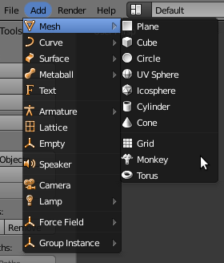
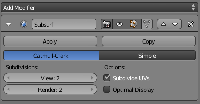

Interactive Iterative Closest Point
This tutorial will teach you how to write an interactive ICP viewer. The program will load a point cloud and apply a rigid transformation on it. After that the ICP algorithm will align the transformed point cloud with the original. Each time the user presses “space” an ICP iteration is done and the viewer is refreshed.
Contents
Creating a mesh with Blender
You can easily create a sample point cloud with Blender. Install and open Blender then delete the cube in the scene by pressing “Del” key :

Add a monkey mesh in the scene :
{kind=link}
Subdivide the original mesh to make it more dense :
{kind=link}
Configure the subdivision to 2 or 3 for example : don’t forget to apply the modifier
{kind=link}
Export the mesh into a PLY file :

The code
First, create a file, let’s say, interactive_icp.cpp in your favorite
editor, and place the following code inside it:
1#include <iostream>
2#include <string>
3
4#include <pcl/io/ply_io.h>
5#include <pcl/point_types.h>
6#include <pcl/registration/icp.h>
7#include <pcl/visualization/pcl_visualizer.h>
8#include <pcl/console/time.h> // TicToc
9
10typedef pcl::PointXYZ PointT;
11typedef pcl::PointCloud<PointT> PointCloudT;
12
13bool next_iteration = false;
14
15void
16print4x4Matrix (const Eigen::Matrix4d & matrix)
17{
18 printf ("Rotation matrix :\n");
19 printf (" | %6.3f %6.3f %6.3f | \n", matrix (0, 0), matrix (0, 1), matrix (0, 2));
20 printf ("R = | %6.3f %6.3f %6.3f | \n", matrix (1, 0), matrix (1, 1), matrix (1, 2));
21 printf (" | %6.3f %6.3f %6.3f | \n", matrix (2, 0), matrix (2, 1), matrix (2, 2));
22 printf ("Translation vector :\n");
23 printf ("t = < %6.3f, %6.3f, %6.3f >\n\n", matrix (0, 3), matrix (1, 3), matrix (2, 3));
24}
25
26void
27keyboardEventOccurred (const pcl::visualization::KeyboardEvent& event,
28 void*)
29{
30 if (event.getKeySym () == "space" && event.keyDown ())
31 next_iteration = true;
32}
33
34int
35main (int argc,
36 char* argv[])
37{
38 // The point clouds we will be using
39 PointCloudT::Ptr cloud_in (new PointCloudT); // Original point cloud
40 PointCloudT::Ptr cloud_tr (new PointCloudT); // Transformed point cloud
41 PointCloudT::Ptr cloud_icp (new PointCloudT); // ICP output point cloud
42
43 // Checking program arguments
44 if (argc < 2)
45 {
46 printf ("Usage :\n");
47 printf ("\t\t%s file.ply number_of_ICP_iterations\n", argv[0]);
48 PCL_ERROR ("Provide one ply file.\n");
49 return (-1);
50 }
51
52 int iterations = 1; // Default number of ICP iterations
53 if (argc > 2)
54 {
55 // If the user passed the number of iteration as an argument
56 iterations = atoi (argv[2]);
57 if (iterations < 1)
58 {
59 PCL_ERROR ("Number of initial iterations must be >= 1\n");
60 return (-1);
61 }
62 }
63
64 pcl::console::TicToc time;
65 time.tic ();
66 if (pcl::io::loadPLYFile (argv[1], *cloud_in) < 0)
67 {
68 PCL_ERROR ("Error loading cloud %s.\n", argv[1]);
69 return (-1);
70 }
71 std::cout << "\nLoaded file " << argv[1] << " (" << cloud_in->size () << " points) in " << time.toc () << " ms\n" << std::endl;
72
73 // Defining a rotation matrix and translation vector
74 Eigen::Matrix4d transformation_matrix = Eigen::Matrix4d::Identity ();
75
76 // A rotation matrix (see https://en.wikipedia.org/wiki/Rotation_matrix)
77 double theta = M_PI / 8; // The angle of rotation in radians
78 transformation_matrix (0, 0) = std::cos (theta);
79 transformation_matrix (0, 1) = -sin (theta);
80 transformation_matrix (1, 0) = sin (theta);
81 transformation_matrix (1, 1) = std::cos (theta);
82
83 // A translation on Z axis (0.4 meters)
84 transformation_matrix (2, 3) = 0.4;
85
86 // Display in terminal the transformation matrix
87 std::cout << "Applying this rigid transformation to: cloud_in -> cloud_icp" << std::endl;
88 print4x4Matrix (transformation_matrix);
89
90 // Executing the transformation
91 pcl::transformPointCloud (*cloud_in, *cloud_icp, transformation_matrix);
92 *cloud_tr = *cloud_icp; // We backup cloud_icp into cloud_tr for later use
93
94 // The Iterative Closest Point algorithm
95 time.tic ();
96 pcl::IterativeClosestPoint<PointT, PointT> icp;
97 icp.setMaximumIterations (iterations);
98 icp.setInputSource (cloud_icp);
99 icp.setInputTarget (cloud_in);
100 icp.align (*cloud_icp);
101 icp.setMaximumIterations (1); // We set this variable to 1 for the next time we will call .align () function
102 std::cout << "Applied " << iterations << " ICP iteration(s) in " << time.toc () << " ms" << std::endl;
103
104 if (icp.hasConverged ())
105 {
106 std::cout << "\nICP has converged, score is " << icp.getFitnessScore () << std::endl;
107 std::cout << "\nICP transformation " << iterations << " : cloud_icp -> cloud_in" << std::endl;
108 transformation_matrix = icp.getFinalTransformation ().cast<double>();
109 print4x4Matrix (transformation_matrix);
110 }
111 else
112 {
113 PCL_ERROR ("\nICP has not converged.\n");
114 return (-1);
115 }
116
117 // Visualization
118 pcl::visualization::PCLVisualizer viewer ("ICP demo");
119 // Create two vertically separated viewports
120 int v1 (0);
121 int v2 (1);
122 viewer.createViewPort (0.0, 0.0, 0.5, 1.0, v1);
123 viewer.createViewPort (0.5, 0.0, 1.0, 1.0, v2);
124
125 // The color we will be using
126 float bckgr_gray_level = 0.0; // Black
127 float txt_gray_lvl = 1.0 - bckgr_gray_level;
128
129 // Original point cloud is white
130 pcl::visualization::PointCloudColorHandlerCustom<PointT> cloud_in_color_h (cloud_in, (int) 255 * txt_gray_lvl, (int) 255 * txt_gray_lvl,
131 (int) 255 * txt_gray_lvl);
132 viewer.addPointCloud (cloud_in, cloud_in_color_h, "cloud_in_v1", v1);
133 viewer.addPointCloud (cloud_in, cloud_in_color_h, "cloud_in_v2", v2);
134
135 // Transformed point cloud is green
136 pcl::visualization::PointCloudColorHandlerCustom<PointT> cloud_tr_color_h (cloud_tr, 20, 180, 20);
137 viewer.addPointCloud (cloud_tr, cloud_tr_color_h, "cloud_tr_v1", v1);
138
139 // ICP aligned point cloud is red
140 pcl::visualization::PointCloudColorHandlerCustom<PointT> cloud_icp_color_h (cloud_icp, 180, 20, 20);
141 viewer.addPointCloud (cloud_icp, cloud_icp_color_h, "cloud_icp_v2", v2);
142
143 // Adding text descriptions in each viewport
144 viewer.addText ("White: Original point cloud\nGreen: Matrix transformed point cloud", 10, 15, 16, txt_gray_lvl, txt_gray_lvl, txt_gray_lvl, "icp_info_1", v1);
145 viewer.addText ("White: Original point cloud\nRed: ICP aligned point cloud", 10, 15, 16, txt_gray_lvl, txt_gray_lvl, txt_gray_lvl, "icp_info_2", v2);
146
147 std::stringstream ss;
148 ss << iterations;
149 std::string iterations_cnt = "ICP iterations = " + ss.str ();
150 viewer.addText (iterations_cnt, 10, 60, 16, txt_gray_lvl, txt_gray_lvl, txt_gray_lvl, "iterations_cnt", v2);
151
152 // Set background color
153 viewer.setBackgroundColor (bckgr_gray_level, bckgr_gray_level, bckgr_gray_level, v1);
154 viewer.setBackgroundColor (bckgr_gray_level, bckgr_gray_level, bckgr_gray_level, v2);
155
156 // Set camera position and orientation
157 viewer.setCameraPosition (-3.68332, 2.94092, 5.71266, 0.289847, 0.921947, -0.256907, 0);
158 viewer.setSize (1280, 1024); // Visualiser window size
159
160 // Register keyboard callback :
161 viewer.registerKeyboardCallback (&keyboardEventOccurred, (void*) NULL);
162
163 // Display the visualiser
164 while (!viewer.wasStopped ())
165 {
166 viewer.spinOnce ();
167
168 // The user pressed "space" :
169 if (next_iteration)
170 {
171 // The Iterative Closest Point algorithm
172 time.tic ();
173 icp.align (*cloud_icp);
174 std::cout << "Applied 1 ICP iteration in " << time.toc () << " ms" << std::endl;
175
176 if (icp.hasConverged ())
177 {
178 printf ("\033[11A"); // Go up 11 lines in terminal output.
179 printf ("\nICP has converged, score is %+.0e\n", icp.getFitnessScore ());
180 std::cout << "\nICP transformation " << ++iterations << " : cloud_icp -> cloud_in" << std::endl;
181 transformation_matrix *= icp.getFinalTransformation ().cast<double>(); // WARNING /!\ This is not accurate! For "educational" purpose only!
182 print4x4Matrix (transformation_matrix); // Print the transformation between original pose and current pose
183
184 ss.str ("");
185 ss << iterations;
186 std::string iterations_cnt = "ICP iterations = " + ss.str ();
187 viewer.updateText (iterations_cnt, 10, 60, 16, txt_gray_lvl, txt_gray_lvl, txt_gray_lvl, "iterations_cnt");
188 viewer.updatePointCloud (cloud_icp, cloud_icp_color_h, "cloud_icp_v2");
189 }
190 else
191 {
192 PCL_ERROR ("\nICP has not converged.\n");
193 return (-1);
194 }
195 }
196 next_iteration = false;
197 }
198 return (0);
199}
The explanations
Now, let’s break down the code piece by piece.
#include <iostream>
#include <string>
#include <pcl/io/ply_io.h>
#include <pcl/point_types.h>
#include <pcl/registration/icp.h>
#include <pcl/visualization/pcl_visualizer.h>
#include <pcl/console/time.h> // TicToc
We include all the headers we will make use of. #include <pcl/registration/ia_ransac.h> allows us to use pcl::transformPointCloud function. #include <pcl/console/parse.h>> allows us to use parse the arguments given to the program.
typedef pcl::PointXYZ PointT;
typedef pcl::PointCloud<PointT> PointCloudT;
Two typedefs to simplify declarations and code reading. The bool will help us know when the user asks for the next iteration of ICP
void
print4x4Matrix (const Eigen::Matrix4d & matrix)
{
printf ("Rotation matrix :\n");
printf (" | %6.3f %6.3f %6.3f | \n", matrix (0, 0), matrix (0, 1), matrix (0, 2));
printf ("R = | %6.3f %6.3f %6.3f | \n", matrix (1, 0), matrix (1, 1), matrix (1, 2));
printf (" | %6.3f %6.3f %6.3f | \n", matrix (2, 0), matrix (2, 1), matrix (2, 2));
printf ("Translation vector :\n");
printf ("t = < %6.3f, %6.3f, %6.3f >\n\n", matrix (0, 3), matrix (1, 3), matrix (2, 3));
}
This function takes the reference of a 4x4 matrix and prints the rigid transformation in an human readable way.
void
keyboardEventOccurred (const pcl::visualization::KeyboardEvent& event,
void*)
{
if (event.getKeySym () == "space" && event.keyDown ())
next_iteration = true;
}
This function is the callback for the viewer. This function will be called whenever a key is pressed when the viewer window is on top. If “space” is hit; set the bool to true.
// The point clouds we will be using
PointCloudT::Ptr cloud_in (new PointCloudT); // Original point cloud
PointCloudT::Ptr cloud_tr (new PointCloudT); // Transformed point cloud
PointCloudT::Ptr cloud_icp (new PointCloudT); // ICP output point cloud
The 3 point clouds we will use to store the data.
// Checking program arguments
if (argc < 2)
{
printf ("Usage :\n");
printf ("\t\t%s file.ply number_of_ICP_iterations\n", argv[0]);
PCL_ERROR ("Provide one ply file.\n");
return (-1);
}
int iterations = 1; // Default number of ICP iterations
if (argc > 2)
{
// If the user passed the number of iteration as an argument
iterations = atoi (argv[2]);
if (iterations < 1)
{
PCL_ERROR ("Number of initial iterations must be >= 1\n");
return (-1);
}
}
pcl::console::TicToc time;
time.tic ();
if (pcl::io::loadPLYFile (argv[1], *cloud_in) < 0)
{
PCL_ERROR ("Error loading cloud %s.\n", argv[1]);
return (-1);
}
std::cout << "\nLoaded file " << argv[1] << " (" << cloud_in->size () << " points) in " << time.toc () << " ms\n" << std::endl;
We check the arguments of the program, set the number of initial ICP iterations and try to load the PLY file.
// Defining a rotation matrix and translation vector
Eigen::Matrix4d transformation_matrix = Eigen::Matrix4d::Identity ();
// A rotation matrix (see https://en.wikipedia.org/wiki/Rotation_matrix)
double theta = M_PI / 8; // The angle of rotation in radians
transformation_matrix (0, 0) = std::cos (theta);
transformation_matrix (0, 1) = -sin (theta);
transformation_matrix (1, 0) = sin (theta);
transformation_matrix (1, 1) = std::cos (theta);
// A translation on Z axis (0.4 meters)
transformation_matrix (2, 3) = 0.4;
// Display in terminal the transformation matrix
std::cout << "Applying this rigid transformation to: cloud_in -> cloud_icp" << std::endl;
print4x4Matrix (transformation_matrix);
// Executing the transformation
pcl::transformPointCloud (*cloud_in, *cloud_icp, transformation_matrix);
We transform the original point cloud using a rigid matrix transformation. See the related tutorial in PCL documentation for more information. cloud_in contains the original point cloud. cloud_tr and cloud_icp contains the translated/rotated point cloud. cloud_tr is a backup we will use for display (green point cloud).
// The Iterative Closest Point algorithm
time.tic ();
pcl::IterativeClosestPoint<PointT, PointT> icp;
icp.setMaximumIterations (iterations);
icp.setInputSource (cloud_icp);
icp.setInputTarget (cloud_in);
icp.align (*cloud_icp);
icp.setMaximumIterations (1); // We set this variable to 1 for the next time we will call .align () function
This is the creation of the ICP object. We set the parameters of the ICP algorithm. setMaximumIterations(iterations) sets the number of initial iterations to do (1 is the default value). We then transform the point cloud into cloud_icp. After the first alignment we set ICP max iterations to 1 for all the next times this ICP object will be used (when the user presses “space”).
if (icp.hasConverged ())
{
std::cout << "\nICP has converged, score is " << icp.getFitnessScore () << std::endl;
std::cout << "\nICP transformation " << iterations << " : cloud_icp -> cloud_in" << std::endl;
transformation_matrix = icp.getFinalTransformation ().cast<double>();
print4x4Matrix (transformation_matrix);
}
else
{
PCL_ERROR ("\nICP has not converged.\n");
return (-1);
}
Check if the ICP algorithm converged; otherwise exit the program. In case of success we store the transformation matrix in a 4x4 matrix and then print the rigid matrix transformation. The reason why we store this matrix is explained later.
// Visualization
pcl::visualization::PCLVisualizer viewer ("ICP demo");
// Create two vertically separated viewports
int v1 (0);
int v2 (1);
viewer.createViewPort (0.0, 0.0, 0.5, 1.0, v1);
viewer.createViewPort (0.5, 0.0, 1.0, 1.0, v2);
// The color we will be using
float bckgr_gray_level = 0.0; // Black
float txt_gray_lvl = 1.0 - bckgr_gray_level;
For the visualization we create two viewports in the visualizer vertically separated. bckgr_gray_level and txt_gray_lvl are variables to easily switch from white background & black text/point cloud to black background & white text/point cloud.
// Original point cloud is white
pcl::visualization::PointCloudColorHandlerCustom<PointT> cloud_in_color_h (cloud_in, (int) 255 * txt_gray_lvl, (int) 255 * txt_gray_lvl,
(int) 255 * txt_gray_lvl);
viewer.addPointCloud (cloud_in, cloud_in_color_h, "cloud_in_v1", v1);
viewer.addPointCloud (cloud_in, cloud_in_color_h, "cloud_in_v2", v2);
// Transformed point cloud is green
pcl::visualization::PointCloudColorHandlerCustom<PointT> cloud_tr_color_h (cloud_tr, 20, 180, 20);
viewer.addPointCloud (cloud_tr, cloud_tr_color_h, "cloud_tr_v1", v1);
// ICP aligned point cloud is red
pcl::visualization::PointCloudColorHandlerCustom<PointT> cloud_icp_color_h (cloud_icp, 180, 20, 20);
viewer.addPointCloud (cloud_icp, cloud_icp_color_h, "cloud_icp_v2", v2);
We add the original point cloud in the 2 viewports and display it the same color as txt_gray_lvl. We add the point cloud we transformed using the matrix in the left viewport in green and the point cloud aligned with ICP in red (right viewport).
// Adding text descriptions in each viewport
viewer.addText ("White: Original point cloud\nGreen: Matrix transformed point cloud", 10, 15, 16, txt_gray_lvl, txt_gray_lvl, txt_gray_lvl, "icp_info_1", v1);
viewer.addText ("White: Original point cloud\nRed: ICP aligned point cloud", 10, 15, 16, txt_gray_lvl, txt_gray_lvl, txt_gray_lvl, "icp_info_2", v2);
std::stringstream ss;
ss << iterations;
std::string iterations_cnt = "ICP iterations = " + ss.str ();
viewer.addText (iterations_cnt, 10, 60, 16, txt_gray_lvl, txt_gray_lvl, txt_gray_lvl, "iterations_cnt", v2);
We add descriptions for the point clouds in each viewport so the user knows what is what. The string stream ss is needed to transform the integer iterations into a string.
// Set background color
viewer.setBackgroundColor (bckgr_gray_level, bckgr_gray_level, bckgr_gray_level, v1);
viewer.setBackgroundColor (bckgr_gray_level, bckgr_gray_level, bckgr_gray_level, v2);
// Set camera position and orientation
viewer.setCameraPosition (-3.68332, 2.94092, 5.71266, 0.289847, 0.921947, -0.256907, 0);
viewer.setSize (1280, 1024); // Visualiser window size
// Register keyboard callback :
viewer.registerKeyboardCallback (&keyboardEventOccurred, (void*) NULL);
We set the two viewports background color according to bckgr_gray_level. To get the camera parameters I simply pressed “C” in the viewer. Then I copied the parameters into this function to save the camera position / orientation / focal point. The function registerKeyboardCallback allows us to call a function whenever the users pressed a keyboard key when viewer windows is on top.
// Display the visualiser
while (!viewer.wasStopped ())
{
viewer.spinOnce ();
This is the normal behaviour if no key is pressed. The viewer waits to exit.
if (next_iteration)
{
// The Iterative Closest Point algorithm
time.tic ();
If the user press any key of the keyboard, the function keyboardEventOccurred is called; this function checks if the key is “space” or not. If yes the global bool next_iteration is set to true, allowing the viewer loop to enter the next part of the code: the ICP object is called to align the meshes. Remember we already configured this object input/output clouds and we set max iterations to 1 in lines 90-93.
// The user pressed "space" :
if (next_iteration)
{
// The Iterative Closest Point algorithm
time.tic ();
icp.align (*cloud_icp);
std::cout << "Applied 1 ICP iteration in " << time.toc () << " ms" << std::endl;
if (icp.hasConverged ())
{
printf ("\033[11A"); // Go up 11 lines in terminal output.
printf ("\nICP has converged, score is %+.0e\n", icp.getFitnessScore ());
std::cout << "\nICP transformation " << ++iterations << " : cloud_icp -> cloud_in" << std::endl;
transformation_matrix *= icp.getFinalTransformation ().cast<double>(); // WARNING /!\ This is not accurate! For "educational" purpose only!
print4x4Matrix (transformation_matrix); // Print the transformation between original pose and current pose
ss.str ("");
ss << iterations;
std::string iterations_cnt = "ICP iterations = " + ss.str ();
viewer.updateText (iterations_cnt, 10, 60, 16, txt_gray_lvl, txt_gray_lvl, txt_gray_lvl, "iterations_cnt");
viewer.updatePointCloud (cloud_icp, cloud_icp_color_h, "cloud_icp_v2");
}
else
{
PCL_ERROR ("\nICP has not converged.\n");
return (-1);
}
As before we check if ICP as converged, if not we exit the program. printf(”033[11A”); is a little trick to go up 11 lines in the terminal to write over the last matrix displayed. In short it allows to replace text instead of writing new lines; making the output more readable. We increment iterations to update the text value in the visualizer.
Now we want to display the rigid transformation from the original transformed point cloud to the current alignment made by ICP. The function getFinalTransformation() returns the rigid matrix transformation done during the iterations (here: 1 iteration). This means that if you have already done 10 iterations this function returns the matrix to transform the point cloud from the iteration 10 to 11.
This is not what we want. If we multiply the last matrix with the new one the result is the transformation matrix from the start to the current iteration. This is basically how it works
matrix[ICP 0->1]*matrix[ICP 1->2]*matrix[ICP 2->3] = matrix[ICP 0->3]
While this is mathematically true, you will easily notice that this is not true in this program due to roundings. This is why I introduced the initial ICP iteration parameters. Try to launch the program with 20 initial iterations and save the matrix in a text file. Launch the same program with 1 initial iteration and press space till you go to 20 iterations. You will a notice a slight difference. The matrix with 20 initial iterations is much more accurate than the one multiplied 19 times.
}
next_iteration = false;
}
return (0);
}
We set the bool to false and the rest is the ending of the program.
Compiling and running the program
Add the following lines to your CMakeLists.txt file:
1cmake_minimum_required(VERSION 3.5 FATAL_ERROR)
2
3project(pcl-interactive_icp)
4
5find_package(PCL 1.5 REQUIRED)
6
7include_directories(${PCL_INCLUDE_DIRS})
8link_directories(${PCL_LIBRARY_DIRS})
9add_definitions(${PCL_DEFINITIONS})
10
11add_executable (interactive_icp interactive_icp.cpp)
12target_link_libraries (interactive_icp ${PCL_LIBRARIES})
After you have made the executable, you can run it. Simply do:
$ ./interactive_icp monkey.ply 1
Remember that the matrix displayed is not very accurate if you do a lot of iterations by pressing “space”.
You will see something similar to this:
$ ./interactive_icp ../monkey.ply 5
[pcl::PLYReader] ../monkey.ply:12: property 'list uint8 uint32 vertex_indices' of element 'face' is not handled
Loaded file ../monkey.ply (125952 points) in 578 ms
Applying this rigid transformation to: cloud_in -> cloud_icp
Rotation matrix :
| 0.924 -0.383 0.000 |
R = | 0.383 0.924 0.000 |
| 0.000 0.000 1.000 |
Translation vector :
t = < 0.000, 0.000, 0.400 >
Applied 1 ICP iteration(s) in 2109 ms
ICP has converged, score is 0.0182442
ICP transformation 1 : cloud_icp -> cloud_in
Rotation matrix :
| 0.998 0.066 -0.003 |
R = | -0.066 0.997 0.033 |
| 0.005 -0.033 0.999 |
Translation vector :
t = < 0.022, -0.017, -0.097 >
If ICP did a perfect job the two matrices should have exactly the same values and the matrix found by ICP should have inverted signs outside the diagonal. For example
| 0.924 -0.383 0.000 |
R = | 0.383 0.924 0.000 |
| 0.000 0.000 1.000 |
Translation vector :
t = < 0.000, 0.000, 0.400 >
| 0.924 0.383 0.000 |
R = | -0.383 0.924 0.000 |
| 0.000 0.000 1.000 |
Translation vector :
t = < 0.000, 0.000, -0.400 >
Danger
If you iterate several times manually using “space”; the results will become more and more erroned because of the matrix multiplication (see line 181 of the original code) If you seek precision, provide an initial number of iterations to the program

After 25 iterations the models fits perfectly the original cloud. Remember that this is an easy job for ICP because you are asking to align two identical point clouds !